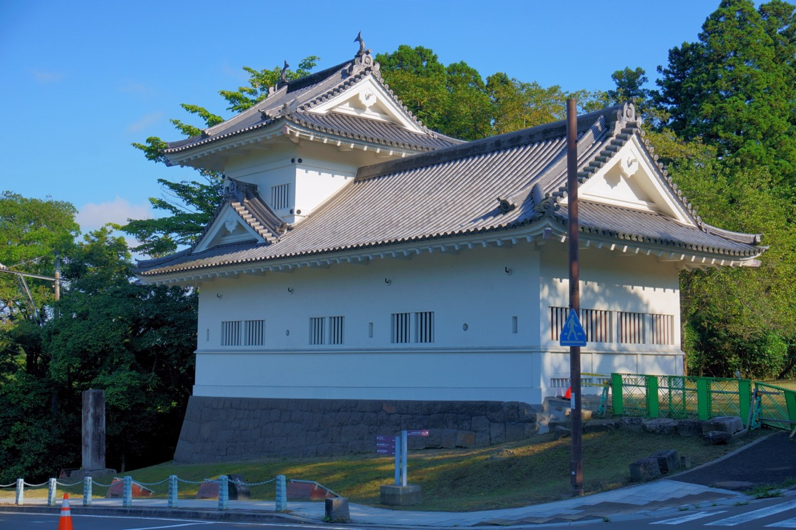
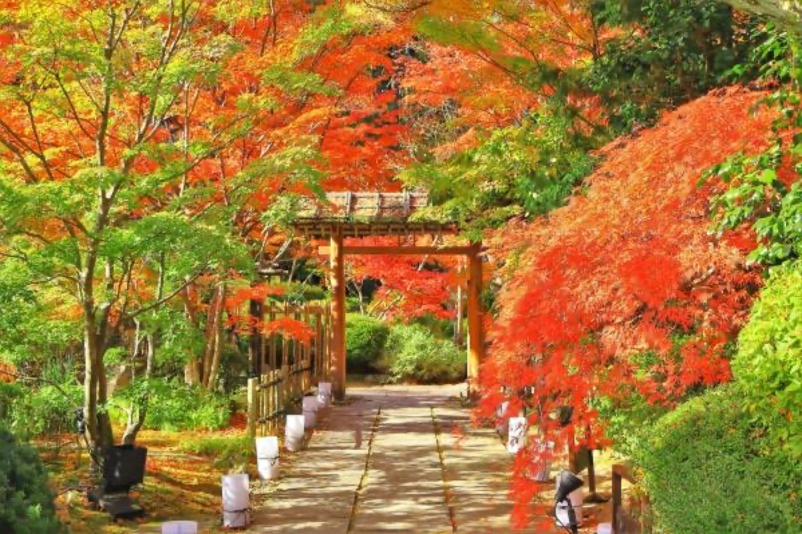
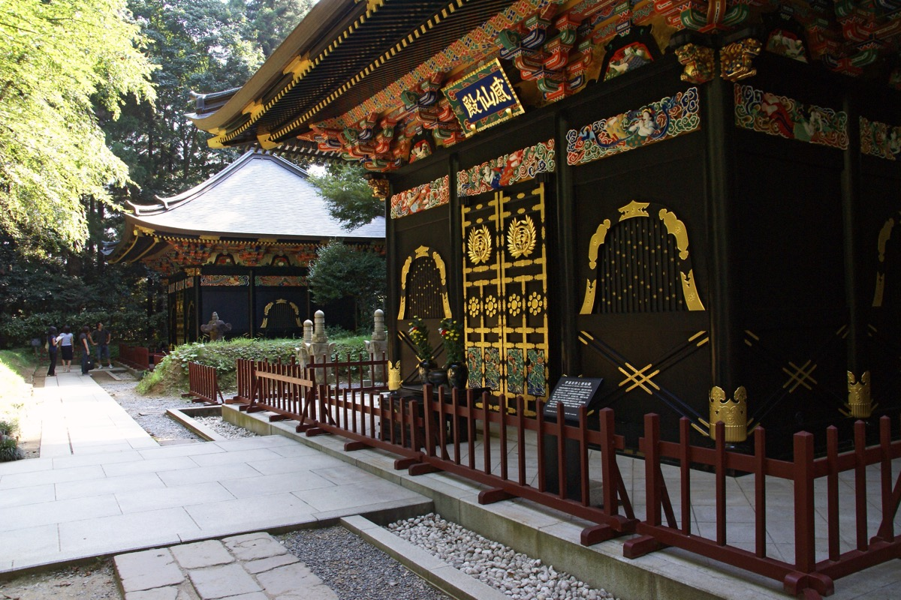
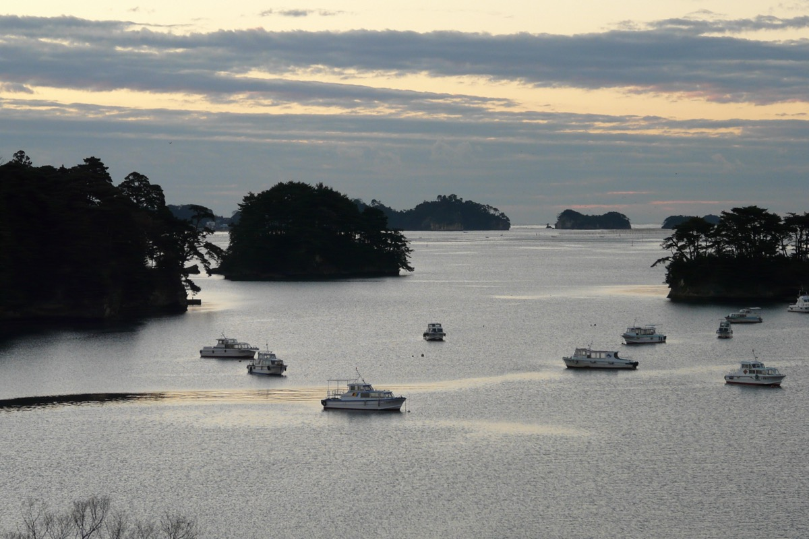
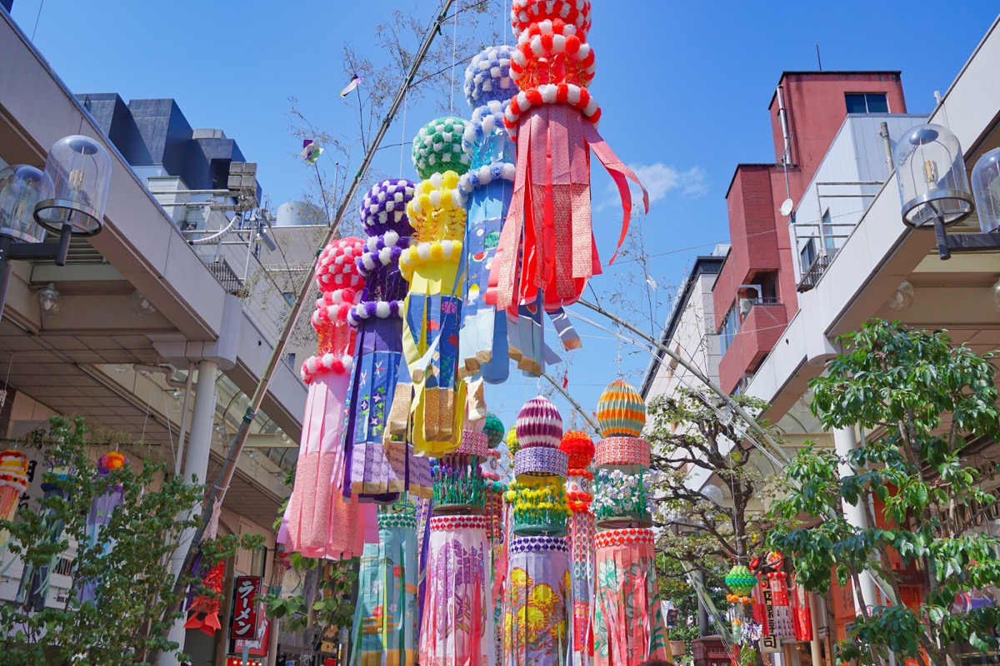
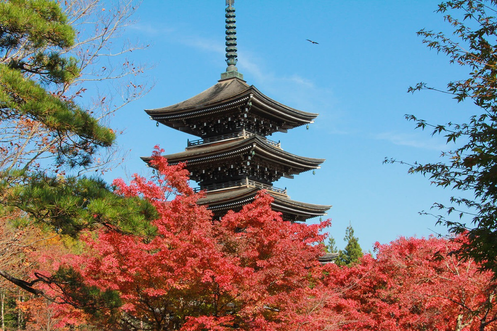
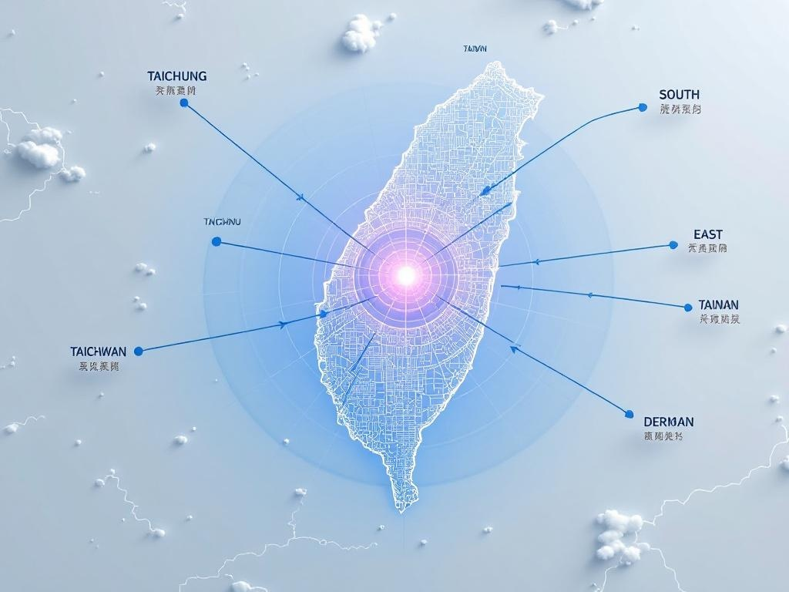
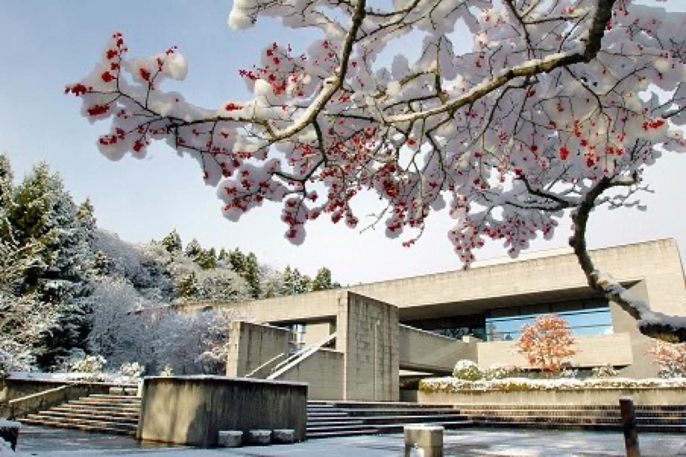

Spotlight
景點探索
從伊達家的傳奇到日本三景的絕美
發現仙台最動人的風景
Spotlight
從伊達家的傳奇到日本三景的絕美
發現仙台最動人的風景


伊達政宗於1603年建造的權力象徵，俯瞰仙台市區的最佳展望點。
仙台城由伊達政宗於1603年建造完成，又稱青葉城。天守閣雖已在1665年因地震倒塌而不復存在， 但遺蹟與復原的石牆仍可感受當年氣勢。城內的青葉城資料館展示了伊達家的歷史與武具。
登上追迴護觀景台，可俯瞰整個仙台市區，天氣晴朗時還能遠眺太平洋。 秋季紅葉時分，城山公園一片火紅，景色最為壯觀。
每年11月上旬至中旬是最佳賞楓時機，護城河畔與城山公園的紅葉隧道， 是攝影愛好者的秘密景點。

伊達政宗華麗長眠之地，桃山建築美學的極致展現。
供奉伊達政宗的華麗陵寢，位於仙台市內的晚奧竹林中。 1931年以混凝土重建，2001年進行大規模修復工程。
採用桃山時代絢爛豪華的建築樣式，朱紅色樓門與金色裝飾在楓紅中更顯莊嚴。 殿內的雕刻與色彩展現了江戶時代工匠的精湛技藝。
每年秋季舉辦的夜間點燈活動，在燈光照射下的瑞鳳殿更加夢幻神祕， 是難得的視覺饗宴。

散落260島的松林群島，日本三景之一，隨處皆如畫。
松島灣內散落著約260個大小不一的島嶼，島上松林蔥鬱，與碧海藍天構成獨特的水墨畫般景色。 被譽為日本三景之一，與天橋立、宮島並列為日本最美景觀。
乘坐觀光船穿梭各島之間是最佳的遊覽方式，全程約50分鐘。 運氣好的話還能遇到可愛的海鷗船長！
瑞嚴寺旁的五大堂是松島最古老的建築，供奉聖觀世音菩薩。 據說在這裡結緣的戀人會得到神明祝福。

日本最壯觀的七夕裝飾，夏季仙台最絢麗的文化盛事。
仙台七夕祭是日本最規模最大的七夕慶典，每年8月6日至8日舉行。 為期三天的祭典期間，吸引數百萬來自世界各地的遊客前來參觀。
街上掛滿五彩繽紛的風幡（願望紙鶴）、短冊、和紙花等華麗裝飾， 長達數百公尺的裝飾隧道令人嘆為觀止，每一個裝飾都代表著人們的願望。
祭典期間還有煙火大会、民俗表演等活動。 建議穿著浴衣參與，感受最道地的日本夏祭氛圍。

森林中的悠閒角落，體驗仙台慢生活與自然之美。
距離仙台市區約30分鐘車程的隱秘山林景點，以定義川清澈水流與周邊自然風光聞名。 溪水清澈見底，夏日是絶佳的避暑勝地。
區域內有多處瀑布和吊橋，其中最著名的是120公尺長的「adine吊橋」， 走在上面可以飽覽溪谷風光。
是當地人週末健行踏青的首選，外國觀光客較少， 能體驗更道地的日本自然風情。山頂的定義山神社據說非常靈驗。

供奉學問之神菅原道真，紫藤花季時如紫色瀑布傾瀉，是仙台最美的神社之一。
榴岡天滿宮供奉日本學問之神菅原道真，許多學生會在考試前來參拜祈求合格。 神社境內氣氛莊嚴肅穆，環境清幽，是遠離城市喧囂的寧靜角落。
神社最著名的景色是紫藤花棚，每到4月下旬至5月上旬，紫藤花盛開如紫色瀑布， 形成夢幻的藤花隧道，是攝影愛好者的秘密景點。
冬季末時神社的梅花公園120株梅樹會相繼開放，舉辦梅花祭。 粉紅與白色的梅花形成強烈對比，是早春賞花的絕佳去處。

了解伊達家與仙台歷史的最佳去處，收藏豐富的桃山至江戶時代文物。
仙台市博物館以展示伊達家文化和仙台城市發展歷史為主。 館內展示了伊達政宗的盔甲、刀劍、書信等重要文物，讓人深入了解這位傳奇人物的生平。
博物館建築本身是昭和時代的代表性建築，外觀採用了西方與日本融合的設計風格。 館內的特展室和常設展覽定會舉辦各類型的文物與藝術展覽。
博物館戶外展示區展示了伊達家使用的火砲、鐘樓等大型文物。 可以在花園般的環境中慢慢欣賞，感受歷史的厚重感。